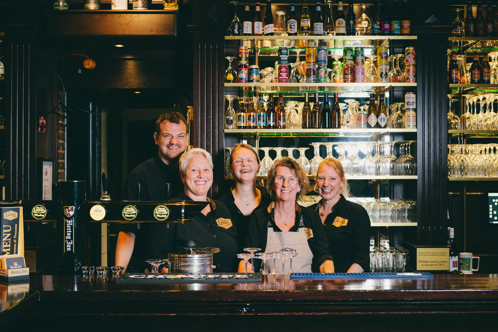
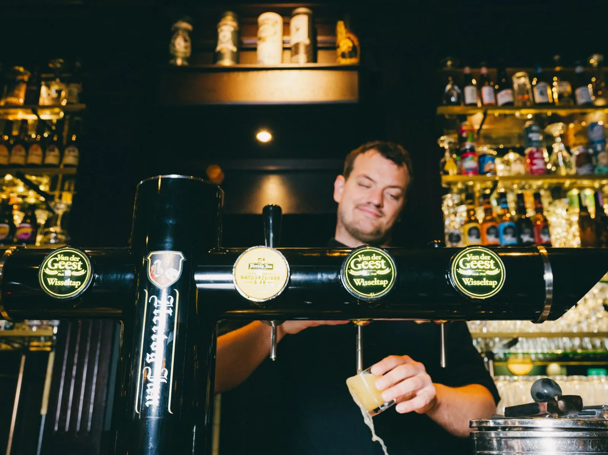
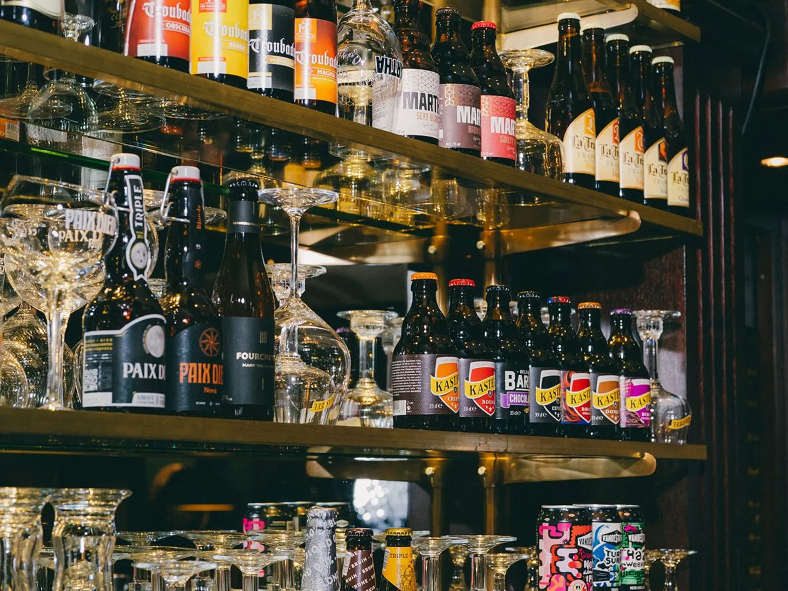
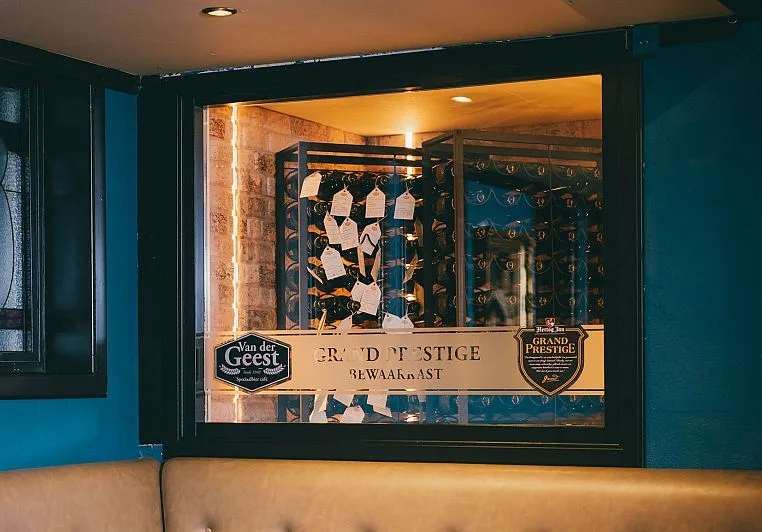
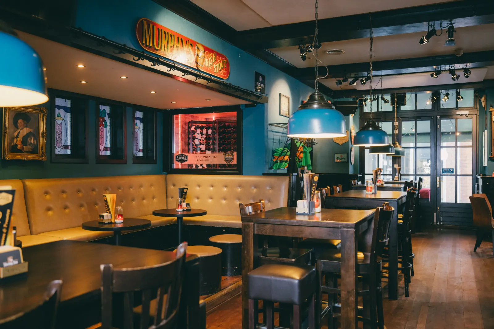
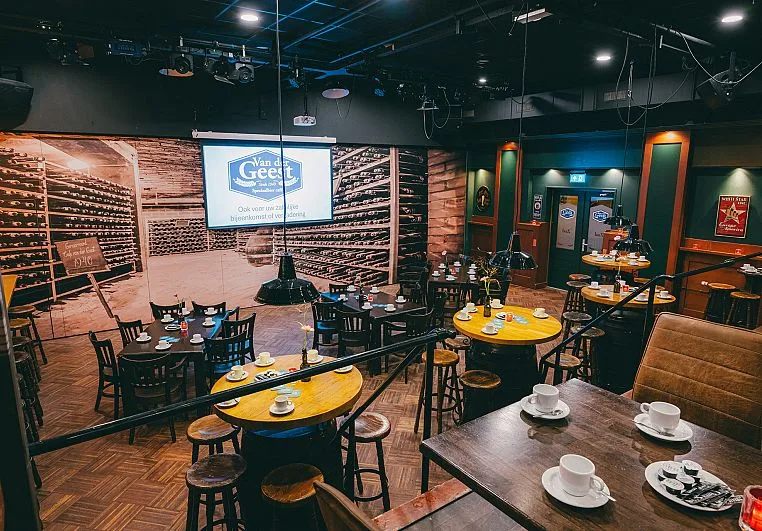
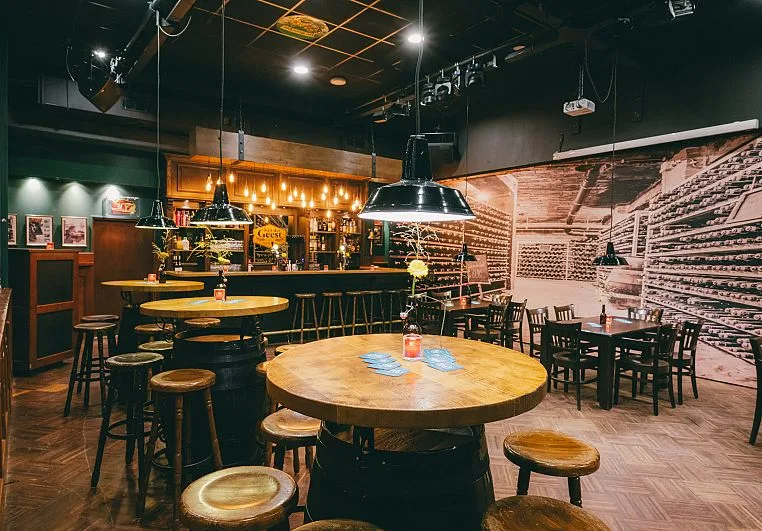
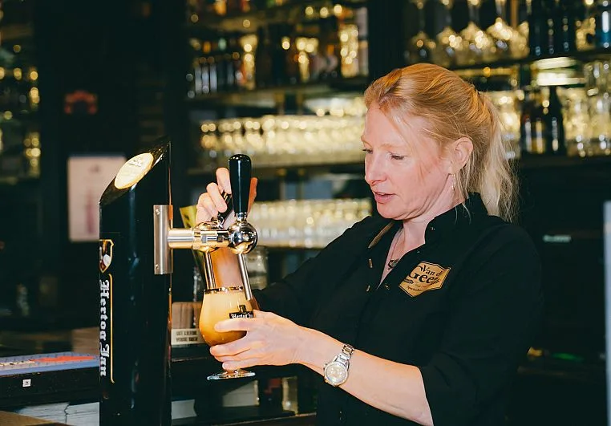

Elkedonderdag
Pubquiz op donderdagavond
Van 20:30 tot 23:55. Acht rondes plus een muziekronde en een fotoronde, met een prijs voor de top 3. Inleggeld € 3,50 per persoon.
Speciaalbiercafé in het dorp, al meer dan 85 jaar
Midden in Noordwijkerhout: acht steeds wisselende speciaalbieren van de tap, een kast vol flessen en de gezelligheid van een echt dorpscafé.
Meer dan 85 jaar staan wij te midden van het dorpsleven van Noordwijkerhout. Bij ons proef je het echte cafégevoel, met een uitgebreide selectie speciaalbieren, gezellige momenten en gastvrijheid die je direct thuis laat voelen.
Ons café is een rookvrije plek om te genieten van onze 8 steeds wisselende speciaalbieren van de tap. Naast het tapassortiment schenken we cocktails, wijnen en speciaalbieren uit de fles. Ook voor een feestje, vergadering of bierproeverij ben je van harte welkom.

Kies een stijl of zoek op naam of brouwerij. De tap wisselt steeds: vraag gerust aan de bar wat er nu op staat.
Het actuele aanbod van de tap en uit de fles staat ook op Untappd.


Geniet van een High Beer: een proeverij van bieren die voor jullie zijn geselecteerd, helemaal naar wens of smaak, met bij elk bier een passend hapje. Of laat ons de vrije keuze en laat je verrassen met bijzondere bieren of seizoensbieren.
Bij elk bier vertelt de barkeeper uitgebreid over de soort, de smaak en het hapje dat erbij hoort.
High Beer met vier bieren en bijpassende hapjes, voor groepen van 4 tot 65 personen.

Een vol en karakterrijk speciaalbier, met diepe tonen van mout, karamel en donker fruit. Bij ons krijgt het een extra dimensie dankzij onze unieke Grand Prestige bewaarkast, met de persoonlijke flessen van liefhebbers. Vraag aan de bar naar een eigen fles in de kast.
We organiseren regelmatig leuke avonden. Elk weekend begint bij ons op donderdagavond met de pubquiz, en verder van bierproeverijen en popquiz tot thema-avonden.
Van 20:30 tot 23:55. Acht rondes plus een muziekronde en een fotoronde, met een prijs voor de top 3. Inleggeld € 3,50 per persoon.
Zondag 14:30 tot 19:00. Vijf speciaalbieren, elk met een wildgerecht. € 49,50 p.p. Opgeven per e-mail.
Teams van 4 tot 6 personen. Opgeven per e-mail bij de organisatie.
Om 21:00. Deelname € 5 p.p., vooraf reserveren gewenst.
Om 15:00. € 5 p.p., teams van maximaal 6 personen, vooraf aanmelden.
Inloop 13:00, aanvang 13:30. € 5 p.p., vooraf reserveren gewenst.
Een verjaardag, jubileum, bruiloft of bedrijfsborrel: jij vraagt het, wij verzorgen het. Met eten, drinken, live muziek of een DJ, en een vaste prijs vooraf als je dat wilt.

25 tot 250 personen
Zaalhuur, ook in combinatie met de Raadskamer, is bij de prijs inbegrepen. Toiletten op de begane grond.

Tot 75 personen
Zaal met microfoon, beamer en meer. Zaal of Raadskamer € 50,00, samen € 75,00. Borrel of lunch naar wens; fiets- en wandelroutes en fietsverhuur via partners.

Zaal gratis te gebruiken
Voor workshops, proeverijen en productpresentaties zijn zaal en faciliteiten gratis te gebruiken; vraag naar de voorwaarden. Ruim parkeren in de buurt.

Vind je het leuk om gasten een fijne avond te bezorgen? We zoeken enthousiaste medewerkers voor ons speciaalbiercafé midden in Noordwijkerhout. Een leuke bijbaan, in het weekend én doordeweeks, in een gezellig team, tussen goed bier en leuke mensen.
Neem contact op| Dinsdag t/m donderdag | 14:00 – 01:00 |
|---|---|
| Vrijdag en zaterdag | 14:00 – 02:00 |
| Zondag | 14:00 – 01:00 |
Keuken open tot 00:30 uur. Bittergarnituur in het weekend tot 01:00 uur.
In het centrum van Noordwijkerhout. Bushalte Victoriberg (lijn 22 en 90) ligt dichtbij. Parkeren kan bij Victoriberg Parking (Victoriberg 29, uitgang Albert Heijn) en Corenmolen Parking (Victoriberg 55); het eerste uur is gratis.